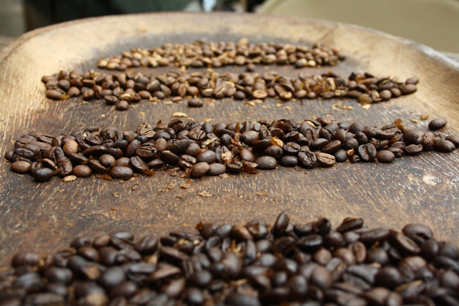

NOVEDADES
5 DE JUNIO DIA MUNDIAL DEL MEDIO AMBIENTE

Dale! apoyemos todos al Medio Ambiente, trae tu vaso/taza y te descontamos el 10%. Igualmente en GENUINO todos nuestros envases son compostables o reciclables.
1 DE OCTUBRE DÍA INTERNACIONAL DEL CAFÉ
Con el objetivo de rendir homenaje al café, una de las bebidas más consumidas y populares del mundo. También es una oportunidad para promover prácticas cafeteras más sostenibles y para visibilizar la difícil situación de los productores de café en el mundo.
CURIOSIDADES:
El café es la segunda bebida más consumida en el mundo después del agua. Todos los días en el mundo se consumen aproximadamente 3 mil millones de tazas de café. El lugar donde se consume más café es en los países nórdicos. El nombre café proviene de la palabra árabe "Qahhwat Al-bun", que significa "vino del grano". En realidad, el grano del café es la semilla de la fruta del árbol de cafeto, un árbol que puede llegar a medir hasta 6 metros de altura. Se ha demostrado que consumir café puede acelerar el metabolismo de una persona entre un 3% a un 11%. Es el segundo producto más comercializado del mundo junto con la Coca Cola. Brasil es el mayor productor de café de todo el mundo. Su cosecha equivale al 30,16% del café mundial. El 54% de los estadounidenses consumen café todos los días. Lo que convierte a los Estados Unidos en el país donde se toma más café. Corea y Japón hay cafés temáticos, sobre animes y doramas populares. Pero también existen los cafés de gatos, donde además de tomarte una deliciosa taza de esta bebida, también puedes acariciar a un lindo gatito. En Japón también existe un café que posee una piscina donde bañarte en esta bebida, el nombre del lugar es Yunessun Spa Resort. Como último dato interesante, en Francia hay una cafetería donde si no muestras modales, como decir hola al llegar y pedir por favor, el café te cuesta un poco más.
EXPO DE CAFÉ DE ESPECIALIDAD 2022

Del 8 al 10 de abril de 2022, la Specialty Coffee Expo se dirigirá a la ciudad de Boston, Massachusetts, para la reunión más grande de profesionales de cafés especiales de América del Norte. Expo presenta los últimos productos de la industria, emocionantes tendencias de la industria y brinda acceso exclusivo a los productos más nuevos en café. Estamos ansiosos por darle la bienvenida nuevamente, para volver a conectar, reconstruir y reiniciar. Las inscripciones se abrirán el 24 de enero de 2022.